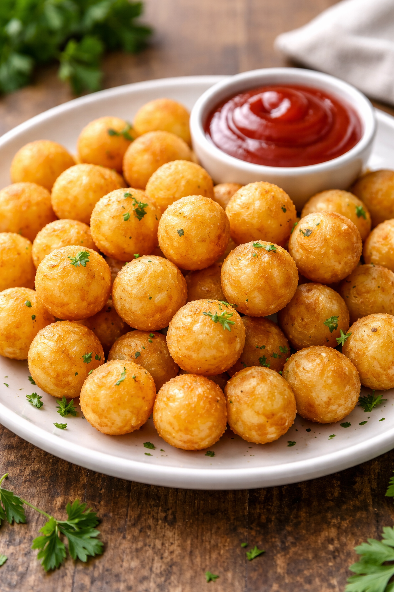

Papas Noisettes

Descripción
Bueno comencemos por su nombre, y es que en la cocina se utiliza el término Noisette, para referirse a los alimentos que se preparan en forma de bolitas, con ayuda de una cuchara o algún utensilio especial.
¿Sabían esto? La palabra noisette significa avellana en francés. Mucho de su significado viene de aquí y de su formita redondeada.
Ingredientes
- 1 kg. de papas grandes.
- Perejil picado, 2 cucharadas
- Aceite, cantidad necesaria
- Sal a gusto
Pasos
- Pelar y lavar las papas.
- Cortar las papas en forma de bolitas con una cucharita especial para hacer noisette y luego colocarlas en una olla cubiertas de agua fría (sin sal).
- Cocinar las papas en agua hirviendo por 3 minutos. Luego retirarlas, escurrirlas y secarlas.
- Calentar una sartén con abundante aceite hasta que esté bien caliente. Freír las papas noisette hasta que queden doradas, retirar y escurrir.
- Salar, espolvorear con perejil y servir caliente.
Home